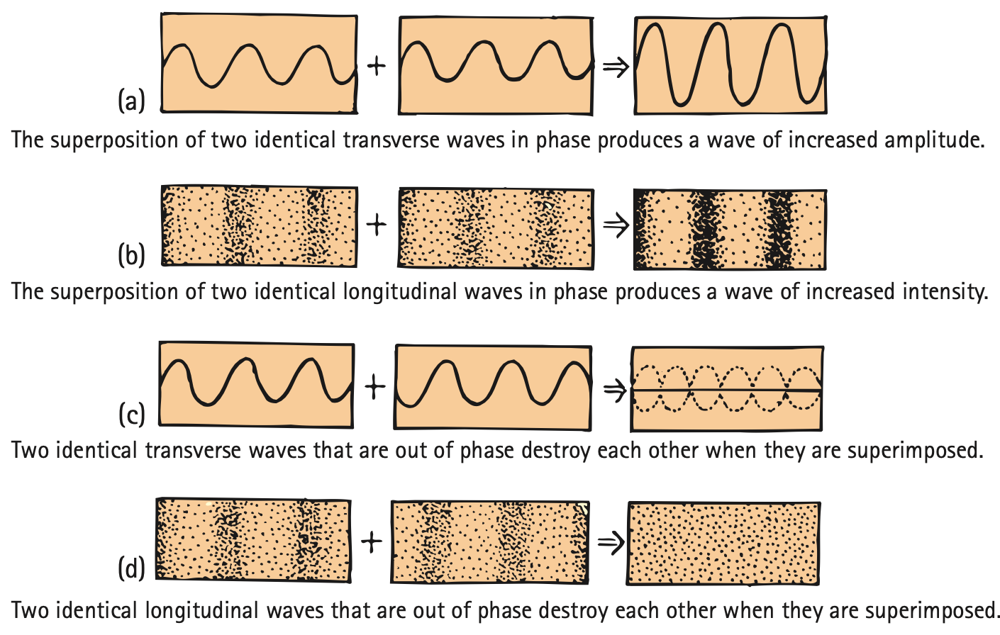

Sound Interference and Beats
Mathematical idea: Superposition explains instantaneous loudness changes, while beat frequency is the absolute difference between two close source frequencies.
You will read speaker and tuning-fork diagrams to connect phase, path difference, noise cancellation, and beat frequency to what a listener actually hears.
Learning Target
Students will analyze sound interference and beats using wave superposition and frequency differences.
I can statements
- I can explain how two sound waves can combine constructively or destructively.
- I can describe how noise-canceling headphones use destructive interference.
- I can explain beats as alternating loud and soft sound caused by close frequencies.
- I can use beat frequency to compare two sound sources.
- I can critique explanations of sound interference using wave vocabulary.
Vocabulary
These are words you will see in this section. Do not define them yet.
- sound interference
- superposition
- constructive interference
- destructive interference
- in phase
- out of phase
- noise cancellation
- beats
- beat frequency
Use the preview activity to decide which words you already know, recognize, or do not know yet. Watch for these words in bold when they are first introduced or defined in the reading.
Preview: Skim Before You Read
Directions
Before reading closely, skim the vocabulary list and the section. Look at titles, headings, bold words, pictures, captions, diagrams, tables, and formulas. Do not try to understand everything yet. Your job is to notice what already looks familiar and make predictions about what this section may explain.
Step 1 — Sort the vocabulary. Write each vocabulary word in the column that best matches what you know right now. You may move a word later.
| Know for sure | Recognize | Don’t know yet |
|---|---|---|
Step 2 — Skim the section. Record what catches your attention before you read closely.
| What I noticed | |
|---|---|
| What I predict | |
| What I wonder |
Content: Read, Look, Annotate, Apply
Directions
Read in short chunks. Annotate the prose and the figures together: underline evidence, circle or highlight bold vocabulary, label arrows or measured features, connect a sentence to an image, and write short questions or connections in the margins.
Reading 1: Sound Waves Obey Superposition Too
sound interference occurs when sound waves overlap. The same superposition rule used for rope and water waves applies: pressure/displacement effects add at each point.
When two matching compressions arrive together, the waves are in phase and produce constructive interference. When a compression from one wave meets a rarefaction from another, the waves can be out of phase and produce destructive interference.

Image read: Compare panels (a) and (b) with panels (c) and (d). Connect crest/trough language to compression/rarefaction language.

Image read: Compare the two path-length cases. Explain why moving the listener can change the sound level even though the speakers keep producing the same tone.
Real rooms contain reflections, many frequencies, and moving listeners, so cancellation is rarely perfect everywhere. Still, interference can create noticeably louder and quieter regions.
Stop and Discuss
- Use Figure 20.17 to translate constructive/destructive interference from transverse-wave language into compression/rarefaction language.
- Why can a listener moving only a short distance hear a change in loudness from two steady speakers?
Example 1: Equal Paths
A listener is the same distance from two identical speakers producing the same tone in phase.
- Predict whether the sound tends to reinforce or cancel.
- Use arrival timing to justify the prediction.
You Try It 1: Half-Wavelength Difference
Two identical speakers emit the same tone, but one path to the listener is half a wavelength longer.
- Predict the interference at that location.
- Explain how the path difference changes phase at the listener.
Reading 2: Destructive Interference as Noise Control
If two speakers receive identical signals but one is reversed in phase, one can send a compression while the other sends a rarefaction. Their overlapping sound can be strongly reduced.

Image read: Compare the listener’s response when the speakers are separated and when they are close together. Explain why cancellation becomes stronger in the illustrated setup.
Modern noise cancellation uses the same wave idea. A microphone detects unwanted sound, electronics create a carefully timed opposing signal, and a nearby speaker produces that signal so the pressure variations reduce at the listener’s ear.

Image read: At a large positive part of the unwanted signal, find the corresponding negative part of the canceling signal. Predict their sum.
Noise cancellation does not mean one constant “opposite tone” can erase every sound in a room. Real noise contains many frequencies and changes with time and location, so the opposing signal must be matched and timed continuously.
Stop and Discuss
- What must a canceling signal match about unwanted sound for destructive interference to reduce it?
- Why would one unchanging tone fail to cancel complicated room noise everywhere?
Example 2: Headphone Microphone
A headphone microphone detects a repeating low-frequency engine sound. The headphone speaker creates a matching wave shifted so compressions line up with rarefactions.
- Name the intended interference.
- Explain what the listener detects when cancellation is effective.
You Try It 2: Bad Cancellation Timing
A canceling signal has the correct frequency but arrives in phase with the noise instead of out of phase.
- Predict whether sound is reduced or increased.
- Explain the error using phase vocabulary.
Reading 3: Beats: Close Frequencies Drift In and Out of Step
When two tones have close but unequal frequencies, their cycles repeatedly line up and then slip apart. The result is beats: a repeating loud-soft-loud pattern caused by alternating constructive and destructive interference.

Image read: Follow the pattern from one constructive region to the next. Explain what happens between them when the two source cycles move out of step.
The beat frequency tells how many loud-soft cycles occur each second. It depends on the difference between the two source frequencies. A larger difference produces faster beats; as the frequencies get closer, beats slow down.
Musicians use beats while tuning. If a string and a reference tone produce rapid beats, their frequencies differ noticeably. Adjusting the string until the beats slow and disappear shows that the frequencies are approaching a match.
The source also connects beat ideas to Doppler-shifted echoes and other applications. The common feature is that two nearby frequencies combine and repeatedly move between reinforcing and opposing phase relationships.
Stop and Discuss
- Use the tuning-fork figure to explain why beats alternate between loud and soft rather than staying at one loudness.
- During tuning, what does a slower beat rate tell you about the two frequencies?
The beat rate is the absolute difference between the two source frequencies:
$$f_{beat}=|f_1-f_2|$$The absolute value keeps the beat frequency positive. If the source frequencies become equal, the beat frequency becomes zero and the beats disappear.
Example 3: Two Tuning Forks
Tuning forks of 256 Hz and 260 Hz sound together.
- Calculate the beat frequency.
- Describe what the listener hears each second.
You Try It 3: Tuning a String
A reference tone is 440 Hz and a guitar string is 443 Hz.
- Calculate the beat frequency.
- If the musician adjusts the string and the beat rate falls to 1 Hz, explain what happened to the frequency difference.
Vocabulary: Define the Terms
You have now seen these words in the reading, images, and practice. Use this table to consolidate the physics meaning of each term.
| Vocabulary term | Definition |
|---|---|
| sound interference | The combining of overlapping sound waves so their pressure/displacement effects add. |
| superposition | Adding the effects of waves at each point while they overlap. |
| constructive interference | Sound interference that reinforces pressure variations and produces greater amplitude/intensity. |
| destructive interference | Sound interference that opposes pressure variations and reduces amplitude/intensity. |
| in phase | Having corresponding parts of two wave cycles aligned in time or position. |
| out of phase | Having wave cycles misaligned so one wave can oppose the other. |
| noise cancellation | Use of a carefully matched opposing sound signal to reduce detected unwanted sound by destructive interference. |
| beats | Periodic alternating loud and soft sound caused when two close frequencies drift in and out of phase. |
| beat frequency | The number of loud-soft beat cycles per second; equal to the absolute difference between the two source frequencies. |
Summary
- Sound waves combine by superposition just like other waves.
- In-phase pressure variations reinforce constructively; out-of-phase variations can cancel destructively.
- Path length changes can move a listener between louder and quieter interference regions.
- Noise-canceling systems create a matched, oppositely phased signal to reduce unwanted sound at a target location.
- Beats occur when close frequencies drift in and out of phase, with $f_{beat}=|f_1-f_2|$.
Common Mistakes
| Mistake | Why it is tempting | Check instead |
|---|---|---|
| Destructive interference destroys sound energy everywhere. | A local diagram may show zero amplitude. | It reduces the detected wave at particular places/times; real systems also transfer/redistribute energy. |
| Any “opposite sound” cancels noise. | Opposite sounds seem like they should subtract. | Effective cancellation requires matching frequency/time structure and opposite phase at the target. |
| Beats mean the sources repeatedly change their own frequencies. | The combined loudness changes with time. | Each source can stay steady; their relative phase drifts because the frequencies differ slightly. |
| Beat frequency is the average of the two frequencies. | The heard tone can be near the average. | Beat rate is the absolute difference, not the average. |
What does it mean for two sound waves to be out of phase?
Two tones are 512 Hz and 518 Hz. Determine the beat frequency and explain how the beat rate would change if the frequencies moved closer together.
What is one thing you learned in this section? Explain it in at least one complete sentence.
What is one thing from this section you still need to understand or practice more? Be specific.